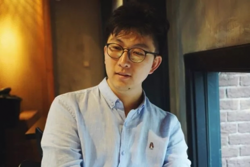

联系电话: 010-86462395
联系电话: 010-86462395
 客服微信: magilink
客服微信: magilink
 邮箱: gongxiang@magi.link
邮箱: gongxiang@magi.link
 地址: 北京市朝阳区高碑店二区31-5号 麦极智能
地址: 北京市朝阳区高碑店二区31-5号 麦极智能
我们可以看到共享经济已经在我国发展之中成为了一个非常特殊的经济模式,在共享经济发展的过程之中,也受到了不少人的关注,让更多人都看到了这个市场。而薛鼎,前ofo联合创始人,从ofo辞职之后再次续梦共享经济,创办了麦极智能。
对于共享经济来说,最重要的就是做到无人值守,那么麦极智能是如何做到的呢?
薛鼎是共享经济的忠实粉丝,也是共享经济发掘者之一,共享经济在最近几年是非常火热的,共享出行、共享充电等等模式发展都是非常好的,将闲置物品重新利用,也造成了很大的问题发生。
而共享住宿相对于其他来说,是共享经济的核心关键,尤其是随着众多平台的兴起,民宿快速发展,给消费者带来了更个性化的体验。经历过快速发展之后,共享住宿行业问题不断发生,服务却是行业的痛点所在。
但是对于前ofo创始人看来,共享经济能否实现最大的关键就是无人值守。那么在麦极智能无人值守背后有什么秘密呢?是如何做到的呢?
正如已经暴露问题的共享单车来说,共享住宿依然存在很大的问题。
对比酒店阿狸说,共享住宿因为个性化的住宿体验吸引了不少的消费者,但是问题就是非常多的,由于大多共享都是个体经营,服务能力不好,降低了共享住宿的体验。
服务能力跟不上,是非常关键的问题所在。目前国内非标类住宿,包含单体以及非标酒店,已经达到了1600万间,这些房源的位置、品牌以及经营者都是分散性的,就拿小猪短租来说,平台上个人房东有12.36万名,占总体百分之八十四,个人房东多以自由职业、IT从业者为主要。
但是对于薛鼎看来,专职房东占比是非常少的,从而意味着房屋都是半共享的状态,比如说共享单车,车虽然进行了共享的,但是需要司机来开车,同样的问题,一方面难以找到合理的服务商,另外还需要高昂的成本。
那么如何解决问题呢?无人值守就是最合适的选择。
这个理念来自于ofo经历所在,在2017年共享单车大战之后,ofo很快将自己的机械锁改成了智能锁,这个项目就是薛鼎在负责的,最终智能锁的换代,让ofo后期维护工作节省了很多,实现了无人值守理念。
这段经历让我们意识到,共享经济只有和无人值守结合才可以拥有更好的发展,发挥到真正的作用。
共享住宿如何实现无人值守呢?所以成立了麦极智能。
服务于住宿后市场,帮助经营者降低经验成本,通过技术以及独特的模式进行结合,实现更少人的管理更多房子的理念,释放了经营者的时间以及精力,这是他们共享住宿具有的和一定规模、一定市场参与者找到无人值守的途经和关键。
这种解放体现在方方面面上,在房屋管理上,麦极智能采用了智能锁可以实现旅客上线化入住,对于经营者来说,后期管理以及服务都是非常方便的,这就是无人值守的理念的核心所在和关键。
联系电话: 010-86462395
客服微信: magilink
邮箱: gongxiang@magi.link
地址: 北京市朝阳区高碑店二区31-5号 麦极智能